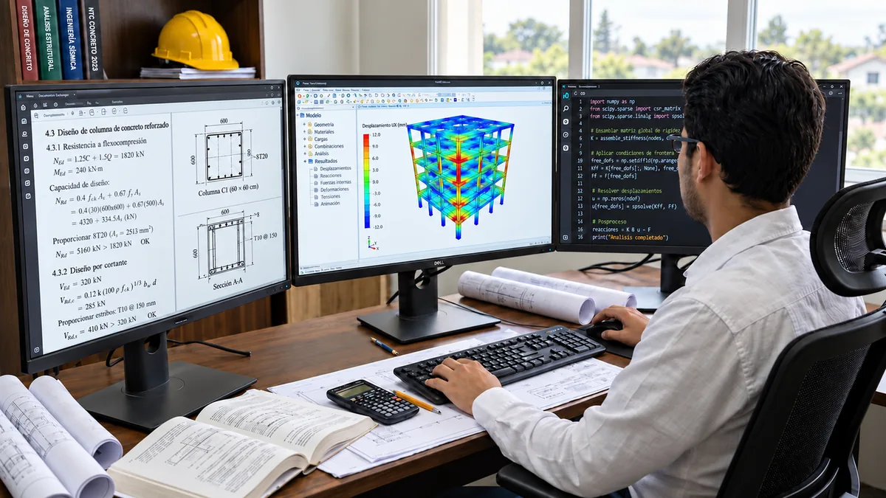
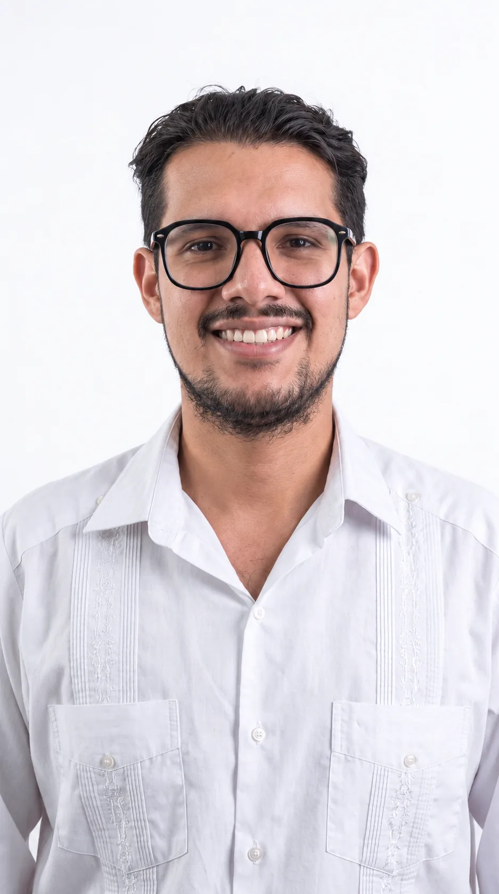
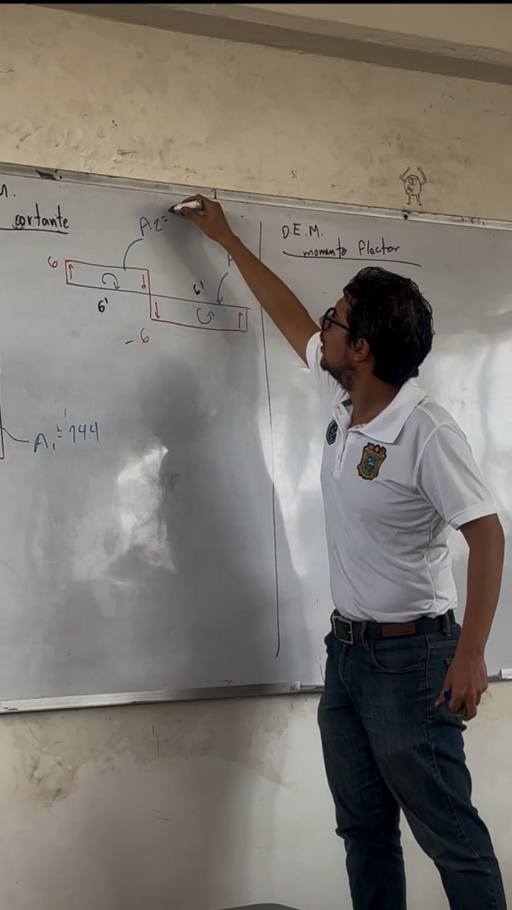

Diseño estructural · obra nueva
Casa Cedros
📍 Veracruz, Ver.
 Abrir en el móvil
Abrir en el móvil
Ingeniería estructural · México
Soluciones estructurales económicas, entregas ágiles y planos claros
Diseñamos estructuras de concreto y acero pensadas para construirse sin sobrecostos.
Entregamos planos completos y bien presentados en plazos cortos, y acompañamos el proyecto
mientras se desarrolla: los cambios se resuelven a tiempo, antes de volverse soluciones
costosas en obra.
Qué hacemos
De la estructuración a los planos de obra, con soluciones pensadas para construirse con economía.
Proponemos la estructuración más sencilla y económica para el proyecto arquitectónico y la revisamos ante cargas de gravedad, sismo y viento.
Vigas, columnas, losas, muros y cimentación de concreto reforzado, dimensionados sin desperdicio de material.
Perfiles, cubiertas y conexiones de acero estructural, con detalles claros para el taller y la obra.
Planos estructurales completos y bien presentados: plantas, cortes, armados y detalles, en PDF y DWG. Con el modelo 3D para ver el proyecto desde el celular, en obra o en junta.
¿Una edificación con grietas, daño por sismo, o un trámite que exige dictamen?
Evaluación estructural de construcciones existentes: inspección en sitio, revisión de la capacidad de la estructura y recomendaciones de refuerzo cuando proceda. El dictamen se emite y firma en colaboración con un Director Responsable de Obra registrado.
📍 Este servicio se ofrece únicamente en el estado de Veracruz.

Cómo trabajamos
Rápido, claro y con margen para cambiar
Portafolio
Trabajos del despacho. Toca Ver en 3D para explorar el modelo, abre los planos en PDF, o escanea el QR para verlo en tu celular.
Diseño estructural · obra nueva
Abrir en el móvil

Diseño estructural · concreto y acero
Análisis y diseño: M.I. Francisco J. Cisneros Ruiz Firma y revisión: Ing. Apolinar Cortez Sánchez
 Abrir en el móvil
Abrir en el móvil

Ampliación a segundo nivel
Proyecto estructural: Ing. Apolinar Cortez Sánchez Adecuación de planos y modelo 3D: M.I. Francisco J. Cisneros Ruiz
 Abrir en el móvil
Abrir en el móvil

Revisión y rehabilitación estructural
 Abrir en el móvil
Abrir en el móvil

Diseño estructural · anteproyecto
 Abrir en el móvil
Abrir en el móvil




Perfil
Fundador y director técnico · f'c estructural
Docencia
Material de los cursos y pláticas que hemos impartido, disponible para consulta.
Plática · 30 de octubre de 2026
Cómo avisa (o no) un edificio antes de caerse. Plática en el Colegio de Arquitectos de Veracruz: la falla dúctil y la frágil, cómo leer una grieta por su grosor y catorce maneras de fallar, de la pieza al edificio completo, con animaciones y casos reales.
Curso · 8 de septiembre de 2026
Módulo 2 del curso Edificios: estructuración, dimensionamiento y acciones, impartido en el Colegio de Arquitectos de Veracruz. Clases de concreto y resistencias mínimas, acero de refuerzo, durabilidad y recubrimientos, con énfasis en la clasificación de exposición del puerto. Conforme a la NTC-Concreto 2023.
Cuéntanos de tu proyecto: te proponemos una estructura económica y te entregamos planos claros, a tiempo.